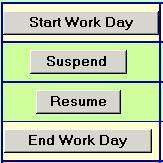
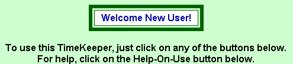
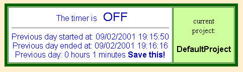
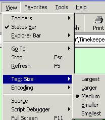
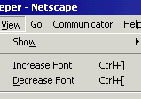
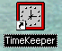
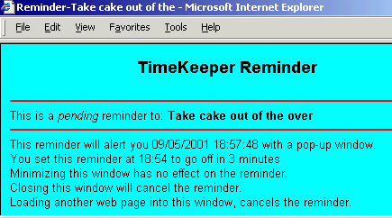
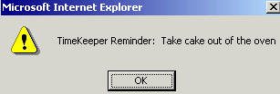
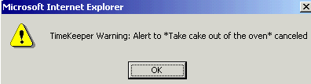

| Home => TimeKeeper |
| Topics on this page: Introduction Permanent Storage Work Periods Days Title Bar Multiple Projects Comments Reset What You See Shortcuts Reminders Gotchas Assorted Notes |

TimeKeeper is a web page that can be used to track hours/minutes spent working on a project. The intended audience is someone who bills clients by the hour (consultants, lawyers, etc.). It can also be of use to someone with limited hours to access the Internet. If your ISP does not provide unlimited net access, you can use TimeKeeper to track your total on-line time so far this month.
The TimeKeeper web page contains normal HTML and a large JavaScript program. Your web browser both displays the HTML and executes the JavaScript (the buzzword for this is "client side processing"). Because of this, TimeKeeper can be used either on-line or off-line. That is, you can use it while logged on to the internet or use it on a stand-alone computer, one without any network connections of any type. The only requirement to run TimeKeeper is a web browser that supports JavaScript (pretty much every web browser supports JavaScript). As such, TimeKeeper can be used in any flavor of Windows, Mac, Linux, etc.
When used online, TimeKeeper is accessed with the HTTP protocol as is every web page. When used off-line, the address in your web browser may be just the file name on your computer (for example C:\MyDocuments\TimeKeeper.html) or may show that the FILE protocol is in use (for example FILE:///C|/MyDocuments/TimeKeeper.html), depending on your web browser.
TimeKeeper was designed and intended for off-line use. That's why it consists of a single web page, uses JavaScript, saves data in cookies and contains no images. There is no installation procedure to use TimeKeeper off-line on your computer; you just copy the web page from this web site to your computer (instructions are on the download page). The on-line use available here at computergripes.com is intended as a demonstration to let you kick the tires. The on-line version is fully functional.
TimeKeeper should be very safe to use on your computer. It does not read or write any files on your hard disk (other than cookies that are controlled by your web browser and only read and written by your web browser) and the full source code is available for inspection (open the file in Notepad or View Source in your browser). If someone gives you a copy of TimeKeeper, they may have modified it, so the safest route is downloading it from this web site.
The basic concept behind TimeKeeper is that a virtual timer is either on or off. If its on, then you are working, creating billable hours. If its off, you are not working. Timekeeper tracks your time worked in days. You tell it when your work day starts and ends (next topic). In between, you tell it every time you stop working for a while and then tell it when you come back to work some more. Longer explanations this are below.
| 
Using TimeKeeper involves nothing more than clicking on buttons on a web page. The picture here shows what these buttons look like. One button tells TimeKeeper when you start working for the day, another tells it when you stop working for the day. In between, you can suspend working and resume working any number of times. TimeKeeper adds up all the minutes/hours you worked in a given day. In IE4, IE5, IE6 and Netscape Navigator v6, inappropriate buttons are disabled. Navigator v4 does not support this. |
TimeKeeper only needs to run when you transition between working and not working. TimeKeeper does not have to be running while you are working. TimeKeeper does not have to be running while you are not working.
After you start a work day or a work session, you can close your web browser or use it for something other than TimeKeeper. The time your work session started is saved in a cookie (a small file read and written by your web browser), which is read later when you suspend the work session or end the work day. If you leave TimeKeeper running while you are working, it does nothing. The only time TimeKeeper does something is when you click on the buttons. It sets no timers (except for the Reminder feature).
 The first time you use TimeKeeper it will recognize that you are a new user and say hello. The instructions to click on a button are only shown once. |
|  An example of the display showing the status of the virtual timer is shown here. TimeKeeper always says if the timer is ON or OFF. It also provides assorted other status messages such as the time you last suspended and the total minutes worked so far today. In this example, a work day was just ended and the display shows the start and end time of the day and the total time worked. |
TimeKeeper does not write to any files on your computer. All its data is saved in web browser cookies. At the end of a work day, you are prompted to save the time worked for that day (as shown in the example above). You have to manually save the time somewhere. Anywhere. TimeKeeper does not save a history of time worked in cookies (I'm considering adding this though).
In between the start and end of a work day are one or more work periods. The start of a day always starts the first work period (aka interval). When you stop working, click on the button to end the current work period. When you resume working, click on the button to start the next work period. At the end of each work period, TimeKeeper updates a running total of the minutes worked in the current work day. Again, there can be any number of work periods in a TimeKeeper day.
While a work interval is active, the TimeKeeper does not display or calculate the length of the current work interval. It does display the time the current work interval started so you can tell how how long you have been working. To get the computer to calculate the length of the current work interval, suspend it and then immediately resume it.
A day in TimeKeeper does not have to be a real day. You determine what a TimeKeeper day is. You can click on the button and button at any time. I suspect most people will want a TimeKeeper day to be a real, calendar day, it's simpler that way. However, a consultant who bills clients on a weekly basis can use TimeKeeper days to represent weeks. This would save having to add up each days total into a weekly total.
At the end of your work day, you need to manually make a note of the total time worked that day. The TimeKeeper does not save this information in any permanent way. It displays the total work time for the day when you end the day and, in case you forget to save it, the day total will still be displayed the next day.
In the example above about tracking on-line usage by someone who only gets 15 hours of net access a month, a TimeKeeper day would represent a month. Such a person would use the Suspend and Resume functions all month long and only use the End work day function at the end of the month.
The web browser title bar is changed every time you click on a button. This lets you glance at the Windows task bar to immediately tell if the timer is ON or OFF. The first word in the title is either ON or OFF.
TimeKeeper is a single file called TimeKeeper.html. It currently tracks time only for a single project/client. Despite my using the term "project", someone who bills multiple clients (as opposed to one client with multiple projects) can think of each "project" as the billable time spent working for one client.
Multiple projects can be tracked by using multiple copies of TimeKeeper. Each copy must be in a different directory (aka folder). Copy the TimeKeeper html file the same way you copy any other file.
The project name is taken from the lowermost part of the directory name. For example:
There are some quirks however with browsers and cookies when dealing with the FILE protocol, which TimeKeeper uses, rather than the normal HTTP protocol. The above is true as long as there is only one copy of TimeKeeper per first level directory. That is, to insure each copy of TimeKeeper is dealing with a different project, do not put multiple copies under the same high level directory. The example above works because one copy of TimeKeeper is in a directory under "c:\
My Documents" and the other is under the directory "c:\workstuff". I ran into a problem when the directory name started with a number sign (#). It's probably best to avoid special characters.Opening the same copy of TimeKeeper in different web browsers is another way to work on two projects at the same time. Each web browser maintains its own cookies and knows nothing of the other browser. The down side to sharing a single copy of TimeKeeper is that the project name (taken from the directory name) will be the same. Much better is to have two copies of TimeKeeper on your computer, in two different directories and use one with one browser and the other with a different browser. This will work great, until you need to track three different projects.
Some day I might enhance TimeKeeper to track multiple projects/clients, but it's a big change.
My biggest problem using TimeKeeper has been doing work with the timer off. Comments can be used to correct this situation. Simply add a comment such as "Add 15 minutes to total" to indicate how much time needs to be added to the days total at the end of the day.
Comments are completely optional and will remain displayed until you delete them. Comments are for display purposes only and have no effect on any timings. To delete comments, click the button while the input comment box is blank. The maximum comment size is 99 characters.
Resetting a project clears out all remnants of the current project. It was intended for me, mostly for debugging. It deletes the cookies used by TimeKeeper.
Internet Explorer users can use the F11 key to toggle back and forth between full-screen mode and normal display mode.
|

The TimeKeeper web page also responds to commands from your web browser to resize
the text on the page. In Internet Explorer 5 you can resize the text as
shown here on the right using View=>Text Size.
Depending on the screen resolution used on your computer and the text size specified in your web browser (it's usually Medium), you may or may not be able to see the Comments and Reminder data input text boxes without scrolling. On a computer with a screen resolution of 1024x768, both the Comments and Reminder input boxes are visible using the Smallest and the Smaller setting for the text size in IE5 with normal chrome.  Netscape users can control the text size with View=>Increase Font or View=>Increase Font as shown here on the left. |
If you use TimeKeeper often, you might want to make an icon for it on the Windows desktop. Windows based IE users can right click on the TimeKeeper web page and select "Create Shortcut". This results in a shortcut/icon being placed on the Windows desktop.
To make the desktop icon look something like a TimeKeeper program should look, search on your computer for a file called "clock.exe". It exists on some versions of Windows, but not on others. If you have it, use it as the source for the desktop icon. As shown here, its a clock. To change the icon, right click on the existing icon/shortcut and select properties. Then find the button for and point it to the clock.exe file.
Reminders are a convenience for someone who gets caught up in their work and forgets to do other things. They have no effect on the time worked and their use is completely optional.
The first data entry field is a description of thing you need to be reminded to do. For example, "take cake out of the oven". This reminder text can be up to 99 characters long and is optional. The second data entry field is the number of minutes from now that you want to be reminded. The minimum number of minutes is 1, the maximum is 540.|
When you click on the Set button, TimeKeeper opens a new small
reminder window with a timer running in it. A sample is
shown here on the right. This reminder window is a web page and tells you everything you need to know about the pending reminder. The
reminder windows will remain open and active, even if you close the main
TimeKeeper web page. Minimizing a reminder window has no effect on the
reminder or its timer.
The title of the reminder window is the word "reminder" and the first 20 characters of the reminder text. This way some of the reminder text appears on the Windows task bar. |
 |
|
When it's time to be reminded, TimeKeeper will alert you with a pop-up
window similar to the one shown here on the right. It may or may not
beep depending on your operating system. On a computer running Windows
2000 it did beep. On a computer running Windows NT4 it did not . I'm
told that on an Apple Macintosh it will not beep. In case it does cause a beep, you should turn on external
speakers to make sure you don't miss the alert.
|
 |
|
You can cancel a pending reminder at any time, just by closing the reminder window. When a pending reminder is canceled,
a warning to this effect is issued by TimeKeeper if you are using Internet
Explorer 5 (see sample at right). If the Reminder window is accidentally used to display another web page, the timer will be canceled (I have no control over this, it's the way JavaScript works) and the warning will be issued. |
 |
If you already have a PIM (personal information manager) such as Outlook, Lotus Notes, Lotus Organizer, etc. then Reminders offer nothing the PIM can't already do.
Multiple reminders can run concurrently when using Internet Explorer 5. Reminders don't work well with Netscape Navigator 4.77 due to bugs in Navigator. Not only does Navigator 4.77 allow only one reminder at a time, it also does not warn you when a reminder is cancelled before its time. I have yet to test with other browsers.
FYI: Users of Norton Anti-Virus should be able to use it's scheduler for reminders. The NAV scheduler offers two advantages of TimeKeeper reminders. When the reminder is raised, NAV will beep (if you want it to). Also, the NAV reminder window stays in your face even if you switch from one application to another. It does not go away until you click on its OK button. As such it's much harder to miss a NAV reminder than a TimeKeeper reminder. To date, I have only tried this with NAV 2001. To use it, click on Scheduling, then Add Event, then Schedule a Message to be Displayed.
TimeKeeper is dependent on the date/time that your computer is set to. At the start and end of each work interval it examines the current date/time. The duration of a work interval is determined by the difference between the start date/time and the end date/time. The implications of this are:
If you have more than one web browser program on your computer you have to use the same one for all activity within a project with TimeKeeper. This is because each web browser has its own set of cookies which is where TimeKeeper stores its data. You can use different web browsers for different projects, but within a project, you should use the same browser consistently.
TimeKeeper only deals with minutes, not seconds. As a result, there is bound to be some rounding error with partial minutes worked.
Projects never end, only days do. However a project can be reset. This wipes out all previous traces of the project and is intended only for debugging purposes.
| Top of Page | Home => TimeKeeper |
| Last updated: May 7, 2004 | TimeKeeper: Download | Usage Notes | Change History | Run On-Line | Tech Notes | Enhancements |